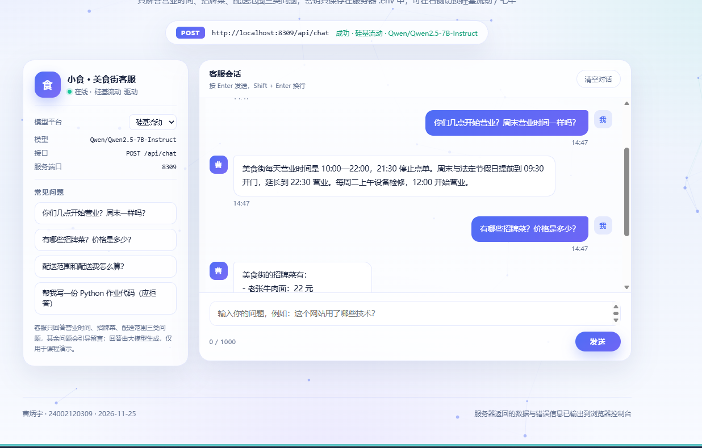
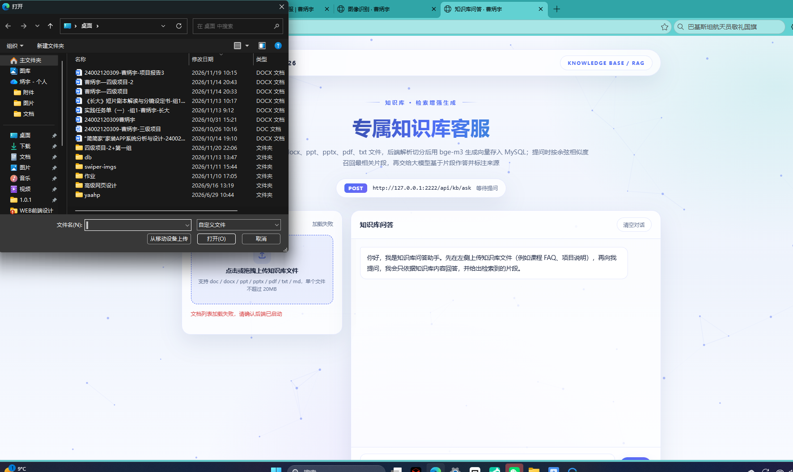
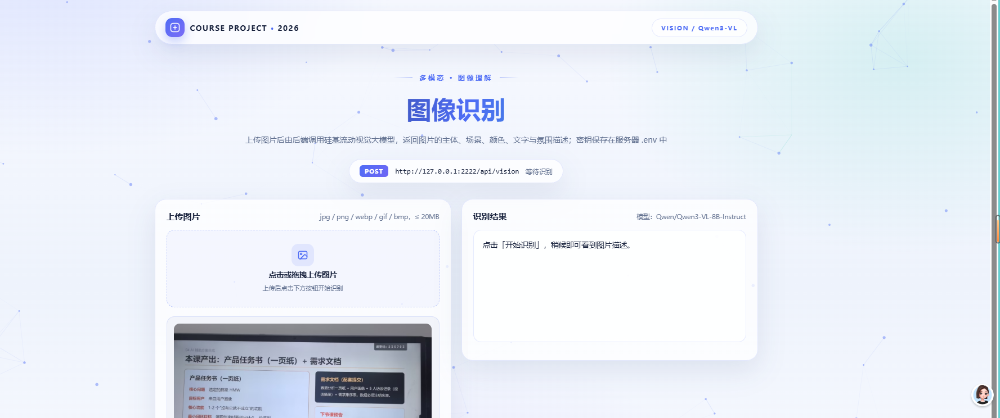
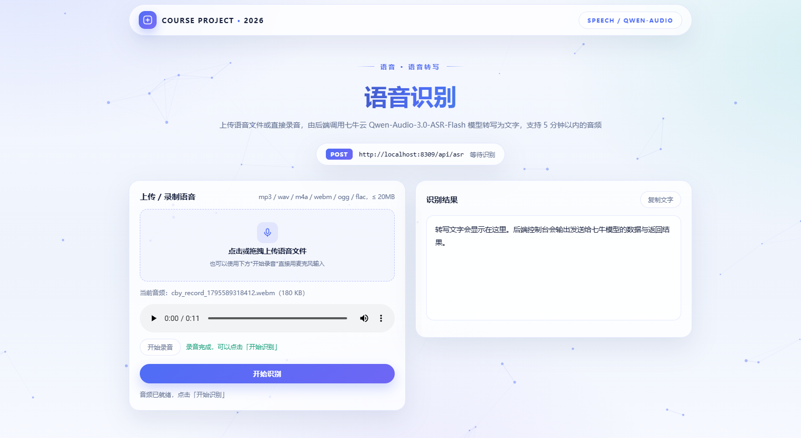

01高级网页设计 · AI 应用案例
五个 AI 模块，一个页面
在线客服、知识库上传管理、知识库问答、图像识别、语音识别已合并到本页：上方 Tab 可直接使用真实页面，下方是每个模块的运行案例与技术说明。
5功能模块
4原页面
2大模型平台
8309后端端口
模块合并 · 直接体验
Tab 内嵌的是原页面，需后端 8309 运行；点击下方案例卡可单独打开五个模块 · 案例展示
截图来自本机实际运行页面；问答卡为真实测试记录
02支持哪些知识库文件格式？
支持 txt、md、pdf、doc、docx、ppt、pptx，单个文件不超过 20 MB。[3]
[1] 客服知识库 0.6212
[2] 客服知识库 0.5943
[3] 项目介绍 0.5468

04
05运行说明
- 本机启动后端后访问
http://localhost:8309/showcase.html，Tab 内的页面才能正常调用接口。 - 大模型密钥只保存在
backend/.env，浏览器只访问本站接口，不接触任何 Key。 - 知识库需先上传文件并等待解析完成，再提问；删除文件会同时清理向量片段与原文件。